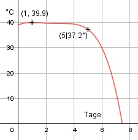

Aufgabe 76 Die Fieberkurve eines Patienten lässt sich durch die Funktion F(t) in °C beschreiben, wenn t die Anzahl der Tage angibt: F(t) = -0,0625t4 + (7/12)t3 - 1,875t2 + 2,25t + 39 a) Welche Temperatur hatte der Patient zu Beginn der Messung? b) Welche hatte er am 5. Tag? c) Welche maximale Temperatur T hatte er? An welchem Tag? a) t = 0 F(0) = -0,0625 * 04 + (7/12) * 03 - 1,875 * 02 + + 2,25 * 0 + 39 = 39° b) F(5) = -0,0625 * 54 + (7/12) * 53 - - 1,875 * 52 + 2,25 * 5 + 39 F(5) = 37,2° c) F(t) = -0,0625t4 + (7/12)t3 - 1,875t2 + 2,25t + 39 F'(t) = -0,25t3 + 1,75t2 - 3,75t + 2,25 F''(t) = -0,75t2 + 3,5t - 3,75 F'''(t) = -1,5t + 3,5 -0,25t3 + 1,75t2 - 3,75t + 2,25 = 0 Durch Probieren gefunden t1 = 1 Hornerschema: -0,25 1,75 -3,75 2,25 t1 = 1 -0,25 1,5 -2,25 -------------------------------------- -0,25 1,5 -2,25 0 Polynomdivision: -0,25t3 + 1,75t2 - 3,75t + 2,25 : (t-1) -(-0,25t3 + 0,25t2) ------------------- 1,5t2 - 3,75t + 2,25 -(1,5t2 - 1,5t) --------------- -2,25t + 2,25 -(-2,25t + 2,25) ----------------- 0 Ergenbis: -0,25t2+1,5t-2,25 t1 = 1 F(1) = -0,0625 * 14 + (7/12) * 13 - 1,875 * 12 + + 2,25 * 1 + 39 = 39,9° - 0,25t2 + 1,5t - 2,25 = 0 |:(-0,25) t2 - 6t + 9 = 0 p, q - Formel: p = -6, q = 9 t2,3 = t2,3 = -3 ± t2,3 = -3 ± t2,3 = 3 F(3) = -0,0625 * 34 + (7/12) * 33 - 1,875 * 32 + + 2,25 * 3 + 39 = 39,56° F''(1) = -0,75 * 12 + 3,5 * 1 - 3,75 < 0 --> Hochpunkt (1|39,9°) Die Temperatur T ist nach 1 Tag am höchsten und beträgt 39,9°. F''(3) = - 0,75 * 32 + 3,5 * 3 - 3,75 = 0 F'''(3) = - 1,5 * 3 + 3,5 ≠ 0 --> Wendepunkt (3|39,56°)
